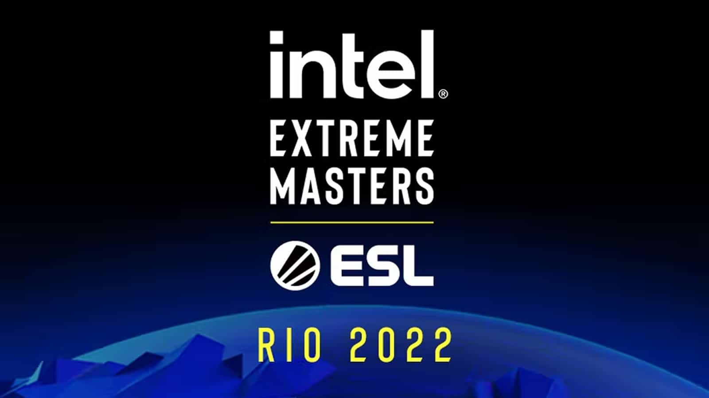

|

|
IEM Rio Major 2022 — крупнейший турнир по CS:GO, проводящийся при поддержке компании Valve. Это будет второй мейджор в 2022 году. Чемпионом последнего мажора CS:GO является FaZe Clan, ставшая победителем PGL Major Antwerp 2022.
Осенний мажор CS-GO 2022 пройдет в Рио-де-Жанейро, Бразилия. На чемпионат мира по CSGO отберутся 24 команды, которые разыграют призовой фонд в размере $1 млн. 16 коллективов начнут выступление со стадии Challengers. Еще восемь команд стартуют на мейджоре по CS:GO со стадии Legends.
Свежие новости
|